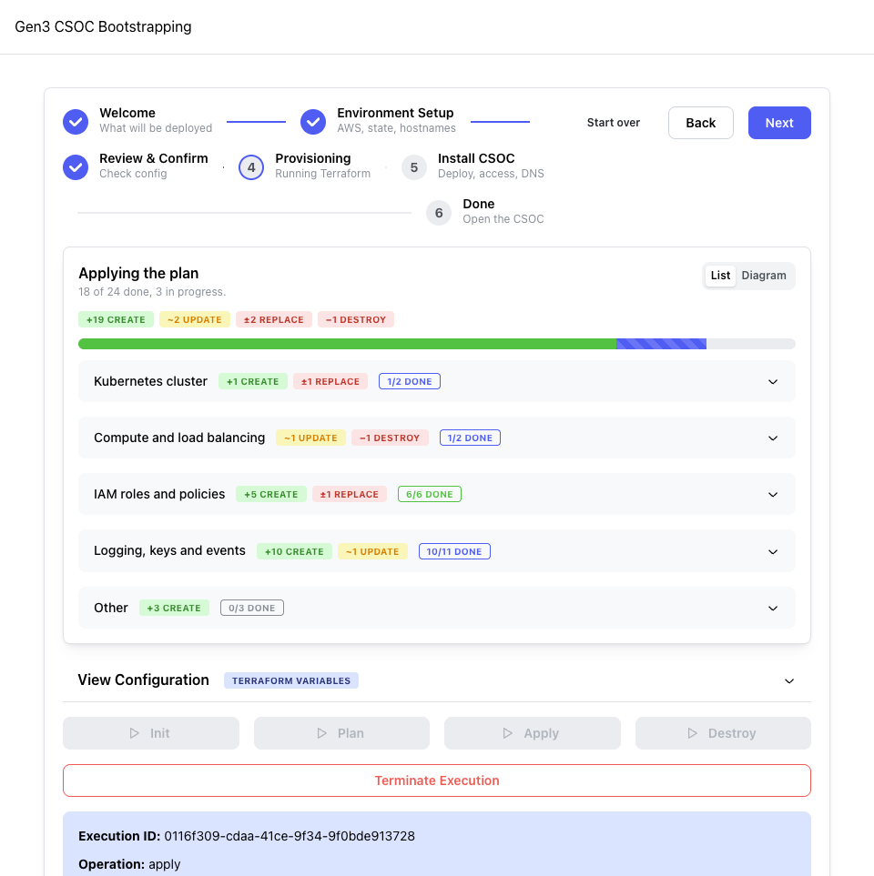
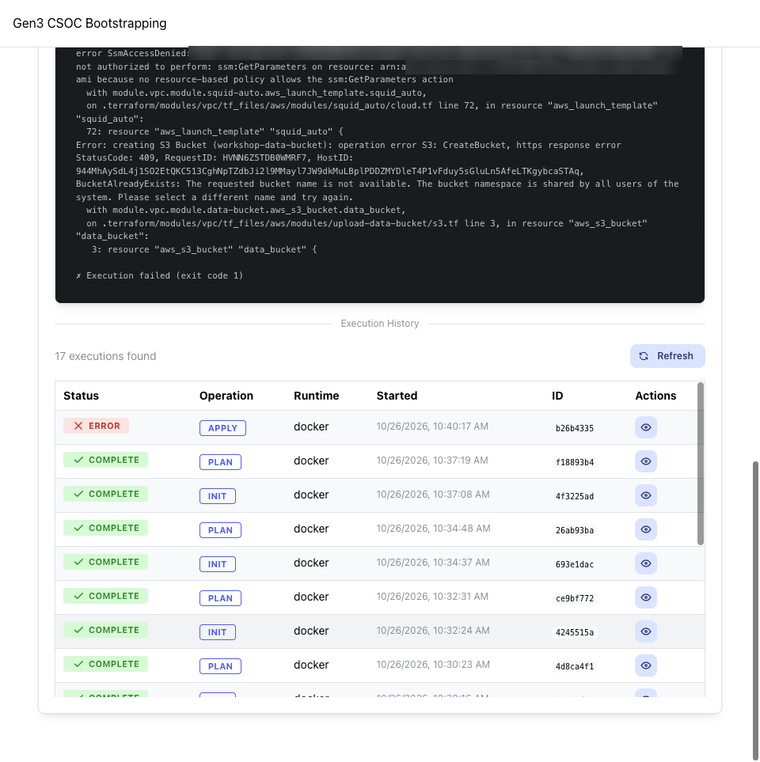

Apply: create the infrastructure
Terraform creates the network and the EKS cluster. This is the longest wait in the tutorial.
Goal
Let Terraform create the VPC, the NAT gateway, the Squid proxy, the EKS cluster with Karpenter, and the IAM roles. The apply carries out exactly the plan you reviewed.
Steps
- Press Apply in the banner. If less than 45 minutes are left on your SSO sign-in, the wizard does not start the apply; it asks you to sign in again and shows the
aws sso logincommand. Terminal Run it, then press Apply again. - Watch the plan review become a progress view. Each resource shows waiting, in progress with its elapsed time, done, or failed, and a bar shows overall progress. The blue Right now box above the list names the resources Terraform is working on at this moment; click one to open its group.
- Read What's happening while you wait. You can close the tab and come back; the wizard follows a run that is still in progress.
Done when: every resource in the progress view is done, and the banner changes from Apply in progress to Infrastructure up; the CSOC needs a certificate.


Let the apply finish
Stopping an apply leaves the environment partial, with some resources created. The EKS control plane takes about 10 minutes with little visible progress; the Right now box shows it is still being created.
Expected result
The network, the NAT gateway and Squid come first. The EKS control plane follows and takes about 10 minutes. Karpenter is installed last. The apply does not wait for EC2 nodes: Karpenter starts the first one when the bootstrap needs it, and it joins the cluster in under 1 minute.
Time
15–20 minutes from Apply until the banner above appears; normal up to 30 minutes.
What's happening
Terraform builds a small, locked-down network and a Kubernetes cluster without fixed worker nodes. The cluster's private subnets have no direct route to the internet: all outbound traffic passes through the Squid proxy, which allows only listed destinations. Each controller that will run in the cluster gets its own narrowly scoped IAM role. Karpenter, which starts EC2 nodes when workloads need them, runs on AWS Fargate so that it needs no nodes of its own. Storage drivers and the other cluster services are installed later, on the Install step.
- The VPC, across three availability zones, with public and private subnets.
- The internet gateway and the NAT gateway, with a private DNS zone and a CloudWatch log group.
- Squid, the outbound proxy, in an auto-scaling group.
- A small AWS Lambda function that keeps the private subnets' outbound route pointed at a healthy Squid instance.
- The EKS control plane, Kubernetes 1.33. Creating it takes about 10 minutes.
- IAM roles: one for each controller, trusted only by that controller.
- Karpenter, running on Fargate.
- EC2 nodes, which Karpenter starts later, when the bootstrap needs them.
Kubernetes version and cost
The cluster runs Kubernetes 1.33, the configuration's default. Its EKS standard support ended on July 29, 2026, so AWS bills the control plane at the extended-support rate of $0.60 per hour ($438 a month instead of $73 a month) until extended support ends on July 29, 2027. That makes the CSOC cost $720–800 a month in us-east-1, before commons and data transfer. See the Amazon EKS Kubernetes release calendar, Amazon EKS pricing and Upgrade Kubernetes.
The certificate is not part of the apply; you choose it on the next step. For every component, see Network and outbound traffic and The EKS cluster.
Troubleshooting
| What you see | What it means | What to do |
|---|---|---|
| Banner: The apply failed or Part of the infrastructure exists | The environment is partial. The plan review marks each failed resource with its error. Terraform keeps what it created. | Fix the cause named in the error, press Plan again (the new plan lists only what is missing), then Apply. Or tear down. |
| A prompt to sign in again before the apply starts | Less than 45 minutes are left on your SSO sign-in, and an apply takes 15–20 minutes. | In a terminal, run the aws sso login command shown, then press Apply. |
| A prompt to type the environment name | The plan destroys or replaces existing infrastructure. | Read the plan first. Type the name only if you intend those changes. |
| The page reloaded during the apply | Nothing is lost; the apply keeps running. | Open localhost:3000/bootstrap. The wizard returns to the step and follows the run. |
| No change in the Right now box for 30 minutes | Terraform is waiting on one resource. | Open the run log and read the last lines: they name the resource. If it is Karpenter or a Helm release, search the log for timed out. Do not press Stop this run while Terraform is still working; if the run fails, follow the first row of this table. |

A failed apply can be resumed
Terraform keeps what it created. Fix the cause and press Plan again: the new plan lists only what is still missing. Then press Apply.